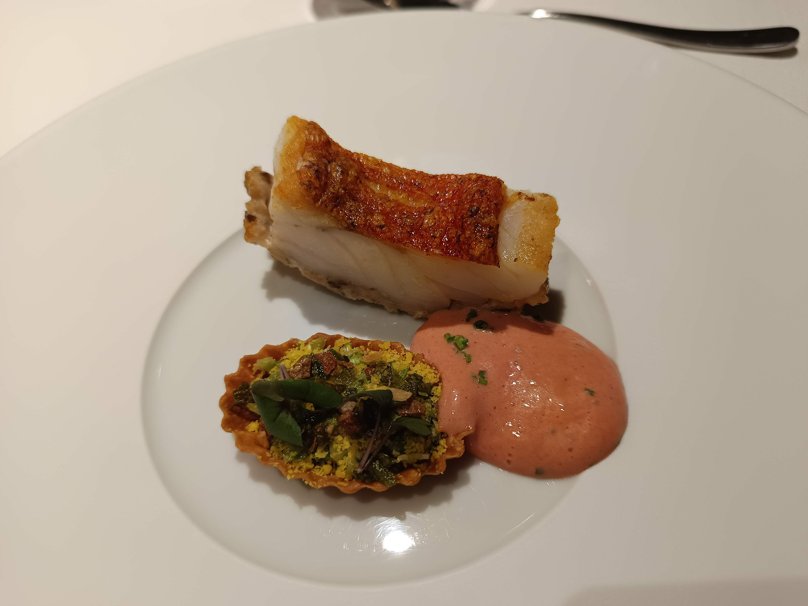
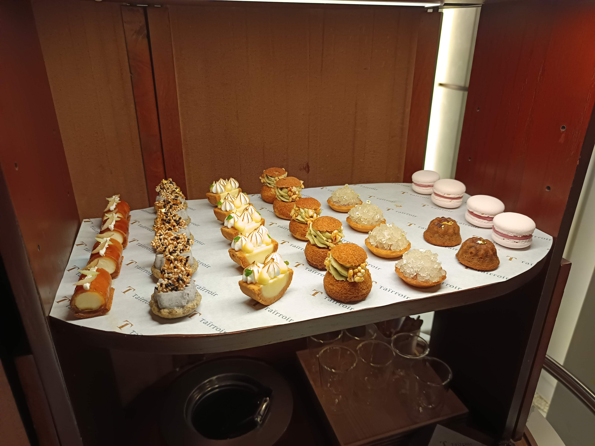

饗宴的第一樂章。精緻的木製承架上呈現三款一口小點：酥脆的小塔、如楓葉般輕薄的脆片，以及包裹著在地食材的圓餅，以脆、軟、滑三種層次喚醒味蕾。

天鵝絨醬，加上雙餃，有咖啡，椰子口味的的酸甜完美融合。

搭以北海道扇貝，佐以綠竹筍，酪梨，搭配的裝飾是原住民排灣、魯凱與卑南族的馬鞭草，去除海鮮的腥味並加上台灣竹筍及水果而成的台式料理。

態芮最著名的靈魂代表作。將大甲芋頭製成極致輕盈的芋泥雲朵，底層藏有溫潤的鵪鶉溫泉蛋，表面鋪滿香脆的櫻花蝦與紫地瓜/椪糖，口感在極致酥脆與溫潤絲滑間跳躍。

雲林綠蘆筍，搭以杏仁核製作的鑽石型茶果凍，加上濃縮雞汁。

新鮮烘烤出爐的歐式麵包，外皮無比香脆，內裡氣孔飽滿、濕潤軟Q。搭配塑成精緻「T」字樣的半鹽奶油，純淨的乳香與麥香相得益彰。
精心乾煎的季節鮮魚排，魚皮酥脆如紙，魚肉依舊保持多汁與彈性。佐以香濃飽滿的黃金比例特調魚骨海鮮奶油醬，並以草本綠色羅勒油點綴，微酸微甘。

主廚向台灣經典烤鴨致敬的得意之作。選用屏東振聲優質鴨肉，經過熟成與細緻烹調，完美呈現烤鴨胸的酥脆與多汁、鴨肉卷的醇厚，以及鴨油高湯搭配細粉的溫潤，成就一幅宏大的鴨肉樂章。
冰涼爽口的台式風味甜品重塑。底層是細嫩帶微辛的薑汁奶酪（薑汁撞奶），鋪上晶瑩剔透的蜂蜜檸檬冰沙，中央是一顆醇厚的仙草雪酪，最後托起一薄片香甜的黑糖蛋白霜，宛如仙子般優雅純淨。


金黃香脆的芝麻烤鴨皮下，是無比粉嫩多汁的熟成鴨胸肉；搭配鹹香的手工鴨肉丸卷與精美的洛神花苦瓜玫瑰，將風味推至頂峰。

緊接在鴨胸後的溫熱湯品。清亮而濃郁的鴨湯帶著酸菜的爽口與發酵酸香，細粉吸飽了湯汁，溫暖脾胃。
冰涼爽口的台式風味甜品重塑。底層是細嫩帶微辛的薑汁奶酪（薑汁撞奶），鋪上晶瑩剔透的蜂蜜檸檬冰沙，中央是一顆醇厚的仙草雪酪，最後托起一薄片香甜的黑糖蛋白霜，宛如仙子般優雅純淨。
將代表台灣靈魂的「鳳梨酥」與「高山茶」完美融合。以金黃酥香的鹹蛋黃費南雪做成圓環，填入香甜微酸的慢燉蜜漬鳳梨丁；置於溫潤清香的包種茶鮮奶油醬池中，搭配醇香的香草雪酪與酥脆的蜂巢太妃糖。

饗宴的優雅句點。態芮專屬的甜點推車緩緩駛至桌邊，承載著各式融合了法式精緻與台式童趣的手工小點（馬卡龍、迷你檸檬塔、黑芝麻脆餅等），任由顧客挑選。再搭配一杯溫熱的精品茶或咖啡，以及清新芬芳的手工雪酪。

如珠寶盒般的華麗推車，提供多款結合法式技法與台式傳統風味的手工茶點，帶來無限驚喜。
精緻擺盤的茶點，配上富有濃郁台灣本土氣息的紅心芭樂冰沙，酸甜清爽，令人回味無窮。
「以法式烹調技法，解構台灣靈魂與風土。」
主廚何順凱（Kai Ho）以敏銳的直覺與豐富的在地情感，將台灣傳統小吃、辦桌文化與家常菜記憶，利用當代法式精準技法重組。在他的帶領下，Taïrroir 態芮於 2023 年榮獲米其林三星肯定，成為全球首家獲得三星殊榮的現代台灣料理餐廳。
菜餚的詳細美味介紹...